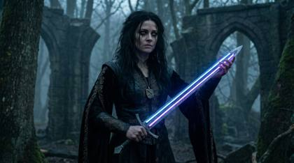
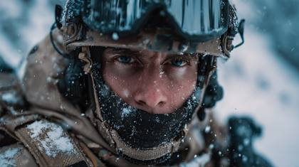
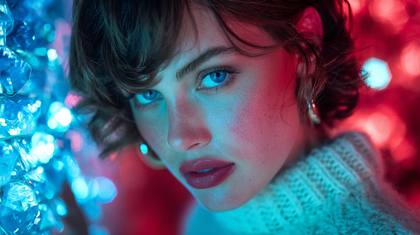
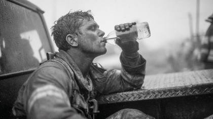
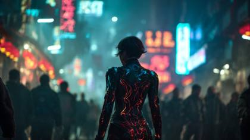

Prompt Vault / Free samples / Meta Tokens / Meta Token Stacks
Free Meta Token Stacks AI prompt examples
These are free sample prompts from the AI Injection Prompt Vault, a paid library of 5,909 AI prompts (3,814 with preview images) for tools like Nano Banana, Veo, Seedance, Kling and Midjourney. Every prompt below is shown in full — copy it and use it. This page shows 6 of the 26 prompts in the Meta Token Stacks collection.

Sony A7R, Zeiss Ultra Prime, A cinematic closeup portrait, hyperreal depth f/1.8 35mm

Arri Alexa 35, JDC Xtal Xpress, The most realistic photograph ever in the world: f/1.4 14mm

close-up, natural soft diffusion: Realistic image of a Modern Soldier in action during winter mountain raid in the mountains ,front view, waist portrait, shot on ARRIFLEX 16SR, Leica Summilux, T2.8 aperture

, , Uncompressed RAW 16-bit ACEScg image, RED V-RAPTOR 8K VistaVision, Sony Venice 2 IMAX certified, soft diffusion with HDR10+ luminance contrast, cinematic depth of field, hyper-detailed textures, RAW color science, natural imperfections

A candid, raw film photograph of a tired firefighter covered in soot, sitting on the rear bumper of a fire truck, drinking water from a bottle. The background is out of focus smoke and debris. Natural light. Cinéma vérité style, handheld camera feel, shot on Super 16mm film, slight chromatic aberration, raw and unfiltered, realistic textures, unpolished, environmental portrait, dramatic grit

A dynamic film still capturing frozen motion of a white rally car drifting sideways through a mud track in a dense forest. Mud flies into the camera lens. The headlights cut through the twilight mist. Shot on RED V-Raptor XL, high shutter speed, kinetic energy, motion blur on extremities, particle effects, aggressive camera angle, intense directional lighting, gritty texture, raw power, suspenseful action.
These are 6 of 26 Meta Token Stacks prompts.
Unlock all 5,909 prompts — £24.99 one-time, yours forever.
Get the full Prompt Vault → £24.99